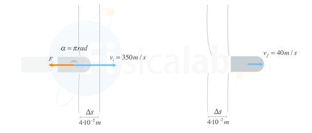

Solución
Podemos utilizar la expresión del trabajo realizado por una fuerza para obtener el valor de la misma a partir del primero:
W=F⋅Δs⋅cos(π)⇒F=−WΔs;
Podemos usar el teorema de la energía cinética para calcular el trabajo que realiza dicha fuerza ya que:
Como conocemos la variación de velocidad que sufre la bala (y por tanto la variación de energía cinética)
la fuerza resultante que actúa sobre la bala es justamente la que opone el panel.
W=ΔEc=Ecf−Eci=12⋅m⋅(vf2−vi2)=12⋅75⋅10−2⋅(402−3502)=−45337.5 J
Finalmente sustituimos en la expresión de la fuerza calculada anteriormente:
-----------------------------------------------------------------------
F=−WΔs=−−45337.54⋅10−2=1133437.5 N
-----------------------------------------------------------------------
Es importante que te des cuenta de que el valor de la fuerza obtenido corresponde a su módulo. Su expresión vectorial, según la figura anterior, vendrá dada por F→=−1133437.5 i→ N;
-----------------------------------------------------------------------